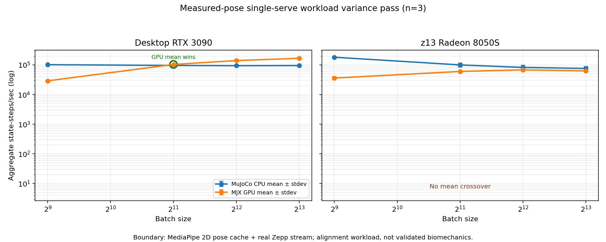

Status: published Date: 2026-08-25 Project: Bulkhead τ / Bulkhead Tau Paper group: Sensor-to-Simulation Engineering Publication posture: frozen and published. The benchmark evidence includes cached MediaPipe landmarks from the single-serve video and a three-repeat variance pass on both desktop and z13.
GPU simulation is not automatically faster than CPU simulation. The useful engineering rule is workload-shaped: use CPU for small or latency-sensitive simulation batches, and use GPU only after the target scene has enough independent work to amortize accelerator overhead.
This paper reports three progressively more realistic MuJoCo/MJX measurements. A tiny sensor-state kernel built from real TennisAgent IMU windows does not cross over on either a dual-RTX-3090 desktop or a Ryzen AI MAX 390 / Radeon 8050S laptop. A larger articulated generic scene reaches practical desktop crossover near batch 512 and approaches parity on the laptop by batch 4,096. A single-serve articulated TennisAgent workload, built from one real serve video template and one real Zepp origins stream, reaches desktop crossover between batch 512 and 2,048 while still not crossing over on the laptop by batch 8,192.
The result is not "GPU good" or "CPU good." It is a routing rule:
CPU is the default for small simulations. GPU becomes useful when the workload
is both sufficiently articulated and sufficiently batched for the specific
hardware path.
When does CPU MuJoCo stop being the better substrate, and when does batched MJX GPU execution become worthwhile?
The question matters for Bulkhead τ because sensor and hardware-in-the-loop workloads are not homogeneous. Some paths are firmware-fidelity controls, some are tiny sensor transforms, and some are large hypothesis sweeps over simulated states. Treating all of them as "GPU work" would overstate the accelerator's role. Treating all of them as "CPU work" would miss the point where large parallel sweeps become cheaper on the GPU.
| Machine | CPU/GPU path | Notes |
|---|---|---|
| Desktop | native MuJoCo CPU; MJX on CUDA cuda:0 / cuda:1 | dual RTX 3090 available; rows are separate device measurements, not a combined two-GPU speedup |
| z13 | native MuJoCo CPU; MJX on ROCm rocm:0 | Ryzen AI MAX 390 / Radeon 8050S unified-memory path via side-by-side ROCm 7.2.4 userspace |
All runners report native CPU rows and MJX rows at matched batch sizes. JIT warm-up is excluded from steady-state timing. GPU rows are only treated as GPU evidence when JAX reports an actual CUDA or ROCm device.
Primary evidence lives under:
docs/domain_runs/MUJOCO-CPU-MJX-SCALE-001/
Key artifacts:
desktop_3090_large_verified.json — large articulated generic scene on desktop CUDA.z13_rocm7_large_2026-08-24.json and z13_rocm7_large4096_2026-08-24.json — matching large-scene z13 ROCm evidence.tennis_sensor_adapter.json and z13_tennis_sensor_adapter.json — real TennisAgent sensor-state adapter.single_serve_skeleton_sensor_desktop.json and single_serve_skeleton_sensor_z13.json — single-serve articulated workload.single_serve_skeleton_sensor_crossover_plot.png — summary plot.The summary plot is here:
docs/domain_runs/MUJOCO-CPU-MJX-SCALE-001/single_serve_posefit_variance_plot.png

The large generic scene is a 10-joint articulated MuJoCo model. It is not a TennisAgent domain model, but it establishes the basic scaling behavior: scene complexity and batch size determine whether GPU launch and synchronization overhead are amortized.
| Batch | Native CPU | RTX 3090 GPU 0 | RTX 3090 GPU 1 | Reading |
|---|---|---|---|---|
| 256 | 166,121 | 110,417 | 107,786 | CPU leads |
| 512 | 166,458 | 169,128 | 166,988 | practical parity |
| 1,024 | 160,500 | 253,316 | 257,943 | GPU leads |
| 2,048 | 151,117 | 293,124 | 304,164 | GPU leads |
| 4,096 | 150,989 | 334,735 | 330,209 | GPU leads ~2.2x |
Evidence: desktop_3090_large_verified.json.
On the z13, the same large scene approached crossover but did not beat CPU in the tested range. At batch 4,096, CPU measured 164,665 steps/s and the Radeon measured 161,247 steps/s: only a 1.02x CPU advantage.
Evidence: z13_rocm7_large4096_2026-08-24.json.
The first TennisAgent adapter intentionally stayed conservative. It used real Zepp and Apple Watch IMU windows, kept the sensor lanes separate, and reported LabWired only as a firmware-fidelity control. Each real IMU sample initialized a free-body state with:
qvel = [accel * dt linear-velocity proxy, measured gyro]
This representation is honest, but too small to make the GPU useful.
At batch 256, native CPU remained far ahead:
| Lane | CPU | Best MJX GPU | Reading |
|---|---|---|---|
| Zepp | ~561k | ~40k | CPU wins |
| Apple Watch | ~562k | ~44k | CPU wins |
Evidence: tennis_sensor_adapter.json.
At batch 256, CPU also led on z13; Apple Watch batch 512 narrowed but did not cross:
| Lane / batch | CPU | MJX GPU | Reading |
|---|---|---|---|
| Zepp / 256 | ~711k | ~199k | CPU wins |
| Apple Watch / 256 | ~710k | ~216k | CPU wins |
| Apple Watch / 512 | ~704k | ~309k | CPU wins |
Evidence: z13_tennis_sensor_adapter.json.
The heavier TennisAgent workload is closer to an actual application. It uses the existing real serve video:
domains/SensorAgents/TennisAgent/data/golden_sessions/serves_20260103/IMG_0050.MOV
and the real Zepp origins stream for swing 1767490069922 from the plugged-in phone pull / local Zepp database. The model is a 10-actuator torso/arm/racket chain. The batch dimension is not fake duplicated swings; it is a deterministic calibration sweep over one serve:
The template now uses cached MediaPipe pose landmarks from the actual serve window. The conversion is intentionally simple: 2D shoulder/elbow/wrist angles become arm/racket joint targets. This closes the measured-skeleton-fit gate, but it remains a 2D pose-derived alignment workload rather than validated 3D biomechanics.
The desktop crossed over between batch 512 and 2,048.
| Batch | CPU | Best CUDA MJX | GPU / CPU |
|---|---|---|---|
| 512 | ~100k | ~28k | 0.28x |
| 2,048 | ~97k | ~112k | 1.16x |
| 4,096 | ~95k | ~145k | 1.52x |
| 8,192 | ~96k | ~171k | 1.79x |
Evidence: single_serve_skeleton_sensor_desktop.json.
A three-repeat variance pass on the measured-pose workload preserved the same routing decision. Mean throughput over repeats:
| Batch | CPU mean | Best CUDA mean | GPU / CPU mean |
|---|---|---|---|
| 512 | ~102k | ~29k | 0.29x |
| 2,048 | ~96k | ~104k | 1.08x |
| 4,096 | ~94k | ~140k | 1.49x |
| 8,192 | ~95k | ~168k | 1.76x |
Evidence: single_serve_posefit_variance_desktop_summary.json and repeat files single_serve_posefit_variance_desktop_r1.json through r3.json.
The z13 did not cross over in the tested range.
| Batch | CPU | ROCm MJX | GPU / CPU |
|---|---|---|---|
| 512 | ~164k | ~38k | 0.23x |
| 2,048 | ~105k | ~63k | 0.59x |
| 4,096 | ~96k | ~69k | 0.72x |
| 8,192 | ~74k | ~62k | 0.83x |
Evidence: single_serve_skeleton_sensor_z13.json.
The z13 three-repeat variance pass also preserved the routing decision. Mean throughput over repeats:
| Batch | CPU mean | ROCm MJX mean | GPU / CPU mean |
|---|---|---|---|
| 512 | ~182k | ~36k | 0.20x |
| 2,048 | ~100k | ~60k | 0.61x |
| 4,096 | ~82k | ~68k | 0.84x |
| 8,192 | ~76k | ~63k | 0.84x |
Evidence: single_serve_posefit_variance_z13_summary.json and repeat files single_serve_posefit_variance_z13_r1.json through r3.json.
This does not mean the z13 GPU path is broken. It means the laptop CPU is strong and the integrated GPU/ROCm path does not beat it for this workload by batch 8,192. The desktop result is different because the RTX 3090 has enough raw parallel throughput to pass its CPU once the articulated workload is large enough.
The three measurements form a useful ladder:
| Workload | Desktop result | z13 result | Meaning |
|---|---|---|---|
| Tiny real sensor-state kernel | no crossover by batch 256 | no crossover by batch 512 | CPU default for small sensor transforms |
| Large generic articulated scene | crossover near batch 512 | near parity at batch 4,096 | articulation and batching matter |
| Single-serve measured-pose articulated alignment sweep | crossover between batch 512 and 2,048 | no crossover by batch 8,192 | application-shaped workload crosses on discrete GPU, not unified iGPU |
The CPU comparison is also informative. In the single-serve workload the z13 CPU is not weak; it is faster than the desktop CPU at most batch sizes. The desktop crossover is therefore not explained by a weak CPU baseline. It is explained by the RTX 3090 GPU path becoming worthwhile once the batch is large enough.
This paper does not claim:
The claim binds to the named runners, artifacts, machines, batch sizes, and workload representations. The TennisAgent single-serve workload is a bridge from synthetic scaling to application-shaped scaling, not a finished digital twin.
Use this routing rule in Bulkhead τ:
The two active-draft gates are closed:
Optional future extensions remain:
Those extensions would widen the claim. They are not required for the bounded routing rule published here.